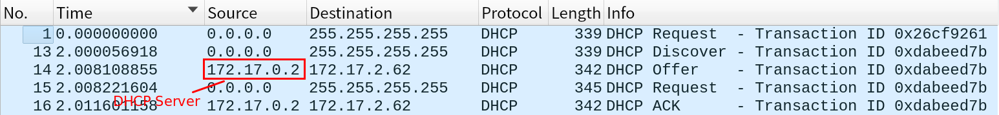

网络协议
目录
1 Linux命令
1.1 ip
in iproute2
1.1.1 配置IP地址
sudo ip addr add 10.0.0.1/24 dev eth1 sudo ip link set up eth1
1.1.2 ip addr
- scope: global说明这张网卡是对外的，host则只能本机相互通信
- lo 全称是 loopback，又称环回接口，往往会被分配到 127.0.0.1 这个地址。这个地址用于本机通信，经过内核处理后直接返回，不会在任何网络中出现。
link/ether 9f:3c:8a:a4:b1:c0 brd ff:ff:ff:ff:ff:ff: MAC地址<BROADCAST,MULTICAST,UP,LOWER_UP>: net_device flags，网络设备的状态标识- UP 表示网卡处于启动的状态
- BROADCAST 表示这个网卡有广播地址
- MULTICAST 表示网卡可以发送多播包
- LOWER_UP 表示 L1 是启动的，网线插着
- qdisc(queueing discipline): 排队规则，如pfifo，数据包采用先入先出的方式通过队列。 pfifo_fast分为三个波段的队列，band 0优先级最高，IP包头里的TOS可指定优先级。
1.2 ifconfig
in net-tools
1.2.1 配置IP地址
sudo ifconfig eth1 10.0.0.1/24 sudo ifconfig eth1 up
1.3 其他
2 IP层
2.1 IP地址CIDR表示法
10.100.122.2/24: 前24位是网络号，后8位是主机号，等同于子网掩码 255.255.255.0 。
10.100.122 网络的广播地址: 10.100.122.255
3 数据链接层
- MTU: 单次传输最大字节数，以太网默认1500个字节(包含MAC头)，多了分片传
4 应用层
4.1 DHCP

- DHCP Discover: 使用0.0.0.0发送了一个广播包，目的 IP 地址为255.255.255.255，类型Boot Request
- DHCP Offer: 里面包含子网掩码、网关、IP租用时长、甚至DNS、NTP Server等信息
- REQ/ACK after offer: 由于还没有得到DHCP Server的最后确认，客户端仍然使用0.0.0.0为源 IP 地址发送请求等待DHCP服务器确认
- 续租：客户端会在租期过去 50% 的时候，直接向DHCP Server发送 DHCP Request要求续租，ACK包中会提供的新的租期以及其他已经更新的TCP/IP参数
4.2 PEX
PEX： 预启动执行环境（Pre-boot Execution Environment），自动安装操作系统。 PXE 协议分为客户端和服务器端，当计算机启动时，BIOS 把PXE客户端调入内存里面。
- BIOS启动之后，启动MBR之前(因无操作系统)
- PEX Client发起DHCP请求获取IP地址
- 如何找到PEX Server？ DHCP options需配置next-server指向PXE服务器的地址，另外要配置初始启动文件填入filename字段
- PEX Client使用TFTP协议(PEX服务器上还需要部署TFTP服务器)下载启动文件
- 启动文件指示内核TFTP地址、initramfs地址等等，客户端根据指示请求这些文件。之后启动内核
5 其他小知识点
5.1 广播地址
分两种：直接广播地址、受限广播地址
- 受限广播地址： 全1
255.255.255.255 - 直接广播地址： 网络号+全1主机号
- 在任何情况下，路由器都不转发目的地址为受限的广播地址的数据报，这样的数据报仅出现在本地网络中